A idéia é realizar um controle de posição em malha-fechada tal como mostra a próxima figura:
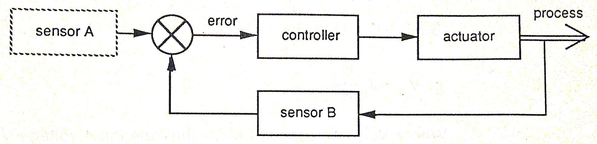
Segue uma breve descrição dos módulos usados neste experimento.
O ângulo deseado de giro (ou referência de entrada) é estabelecido analógicamente estabelecendo um divisor de tensão sobre um potenciômetro. Assim, conforme o mesmo gira, é possível se variar a tensão de saída sendo gerada. Neste caso, usaremos um potenciômetro já graduado (com marcações angulares em graus) para facilitar o estabelecimento da uma referência angular. Será usado o módulo IP150H:
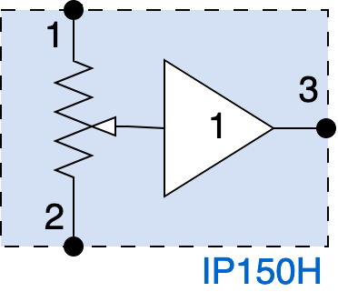
Da mesma forma, nosso sensor de posição é constituído por um potenciômetro montado de tal forma mecânmica, que seu eixo curso é acomplado ao eixo de saída do motor e seus terminais também são usados para trabalhar como um divisores de tensão, gerando no seu terminal central, uma tensão de saída que acaba sendo proporcional ao ângulo de giro do motor (módulo OP150K):
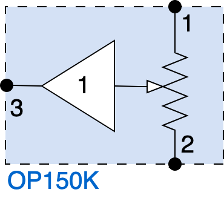
O módulo OA150A (Amp. Op.) somador inversor é usado para analogicamente obter o equivalente à:
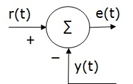
Foto do módulo OA150A:
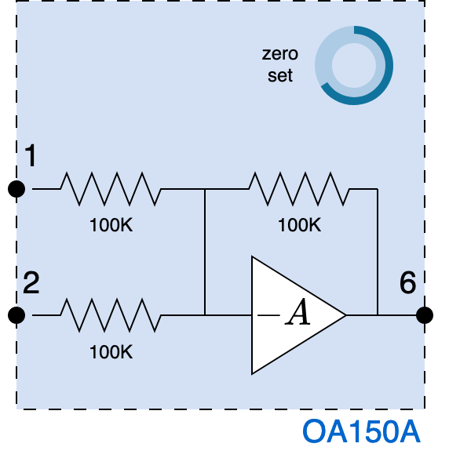
Note que este módulo da forma como foi disponibilizado, não é capaz de realizar analogicamente a diferença entre 2 sinais de entrada. Ele apenas é capaz de realizar soma das tensões presentes nas suas entradas:
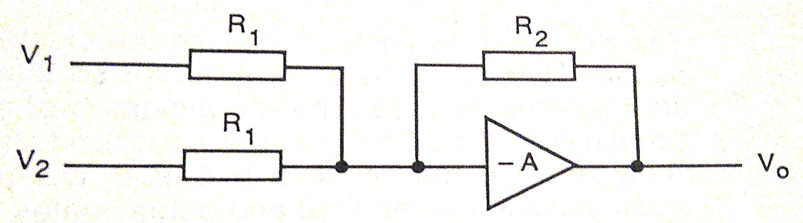
Além disto, apos a soma, o módulo OA150A ainda inverte a fase do sinal resultante (
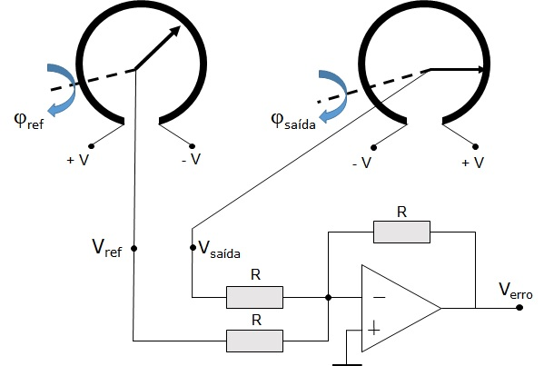
Por fim, estamos tentando realizar controle proporcional de posição angular usando este kit:
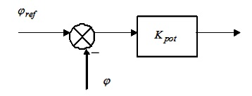
Já o módulo PA150C (figura abaixo) apenas separa os ciclos positivos e negativos do somatório de seus sinais de entrada:
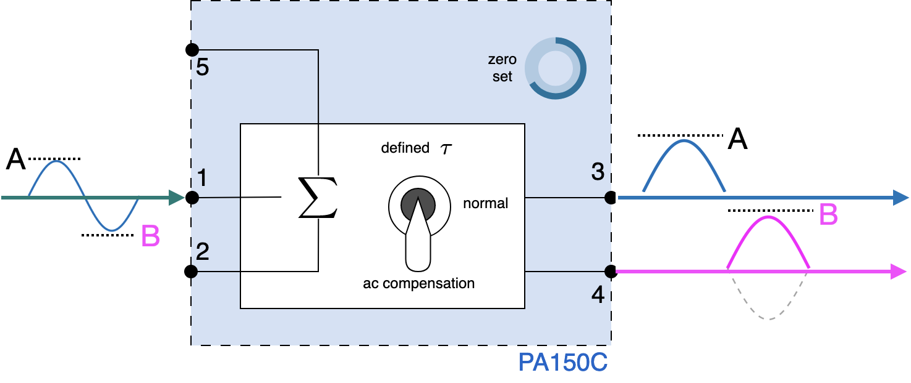
Obs.: Ao usar este módulo, manter a chave de seleção na posição Normal.
Estes sinais “A” e “B” como apareceram na figura anterior, são conectados às 2 entradas, pinos 1 e 2 do módulo SA150 (separadas e distintas do driver do potência do motor):
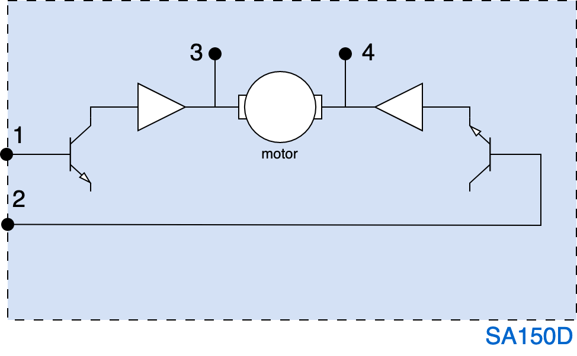
Este módulo (SA150D) atua sobre o controle do motor diretamente sobre suas armaduras, por isto é chamado de controle por armadura. Transístores de potência são usados para modular a corrente (e não a tensão) sobre os terminais (pinos 3 e 4) do motor. O próprio motor contrabalança as correntes nas suas entradas e com base no resultado final, gira no sentido horário ou anti-horário, atingindo um torque diretamente proporcional à corrente efetiva final liberada para o mesmo. Este tipo de controle permite controle direto sobre o torque o motor ao contrário de controladores que variam que a tensão de alimentação nos terminais do motor:
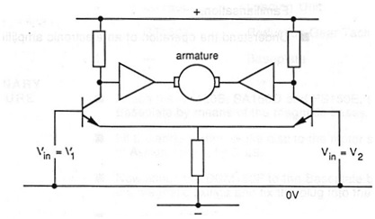
Esta prevista a seguinte montagem neste laboratório (corresponde à Fig. 6.5, pág. 70 do Lab 6 ):
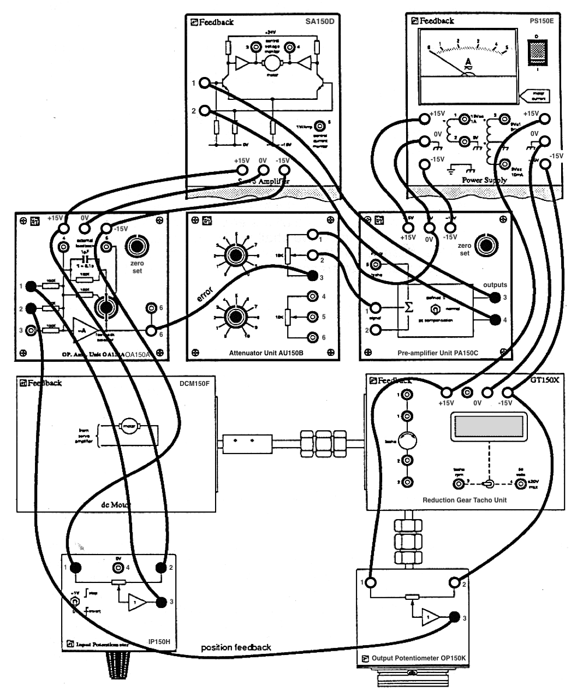
Para entender no que implica as ligações elétricas anterior, o próximo item mostra um diagrama em blocos equivalente ao que foi realizado através desta figura.
A figura abaixo “traduz” o que está sendo realizado através das ligações elétricas mostradas na figura anterior:
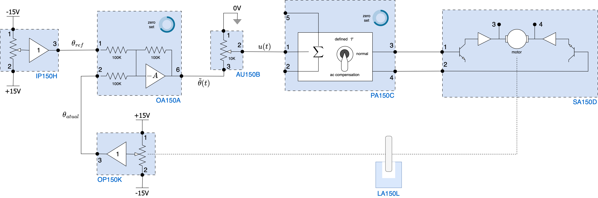
Se você quiser alcançar resultados práticos mais semelhantes aos encontrados na aula teórica simulando um sistema de controle e observando resultados obtidos através do comando step(ftmf), sugere-se conectar um gerador de sinais (ou funções) e um osciloscópio à montagem anterior.
Para tanto:
Se tudo foi feito da forma correta, são esperados resultados como os mostrados no próximo item.
Se o canal 1 do osciloscópio for conectado à saída do gerador de sinais e o canal 2 na saída do sensor de posição, devemos obter gráficos como os mostrados abaixo na tela no mesmo:
Respostado do sistema com ganho baixo:
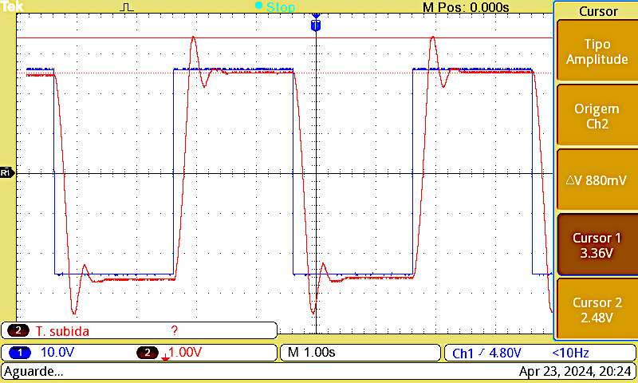
Resposta com ganho
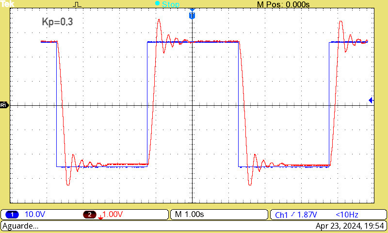
Aumentando mais o ganho:
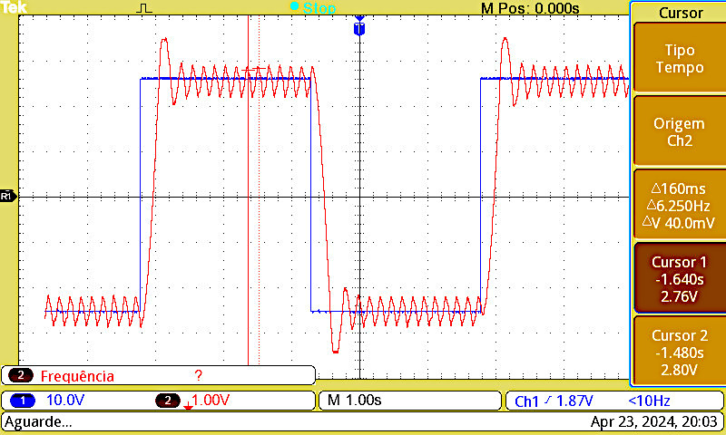
Obs.: O sistema parece entrar em oscilação, mas isto se deve à não-linearidades no sistema (folga em engrenagens, erro/sinal de atuação demasiado para vencer atrito estático).
Aumentando ainda mais o ganho:
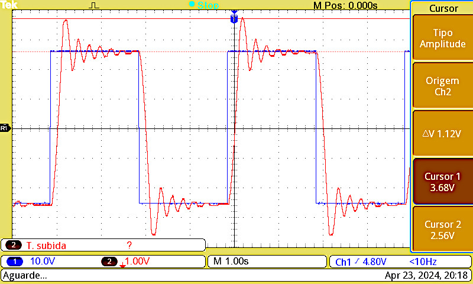
Obs.: Neste caso, o ganho realmente está bastante elevando mostrando resposta oscilatóro com oveshoots.
Note que persiste um erro em regime permanente tal como:
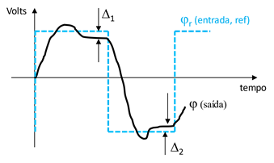
Lab 6: Fechando malha com controle de posição angular usando controlador Proporcional.
Fernando Passold, em 11/05/2026